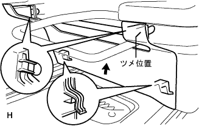

Remove the seat rail |
| 1. Remove the front seat leg cover No.1 |
|  |
Remove the claws and pull the front seat leg cover No. 1 in the direction of the arrow in the figure.
| 2. Remove the front seat leg side cover cap |
 |
Use a minus thin blade driver with a protective tape to remove the claws and remove the front seat leg side cover.
| 3. Front sheet leg cover LH (LH seat yo) |
 |
Remove the claws and remove the front seat leg cover LH (LH seat yo).
| 4. Remove the front seat Assy LH |
Cut the battery minor Star Minal.
Cut the connector of the seat side wire harness and remove the bolt.
Remove the two bolts on the front side.
Remove the two bolts on the rear side.
Remove the front sheet Assing LH from the vehicle.
| 5. Instract panel finish panel LWR CTR removed |
 |
Clip <c> 2 places, 8 claws, and remove the instrument panel finish panel LWR CTR.
Cut the connector of the power outlet socket and remove the instrument panel finish panel LWR CTR.
Remove the three screws and remove the instrument Katsup holder.
| 6. Instrument panel Anda cover SUB-ASSY No.1 |
 |
Remove the clip <a> two, pull the upper part of the instrument panel and cover No.1 to the front, remove the nine claws, and remove the instrument panel and cover No.1.
| 7. Front doorskuff plate LH removed |
 |
Pull up by hand, remove the claws from behind the vehicle, and remove the front door skirt plate LH.
| 8. Reardoor opening trimweather strip LH removed |
| 9. Remove the cowl side trim board LH |
 |
Remove the resin clip.
Remove the two claws and one clip, and remove the cowl side trim board LH.
| 10. Deck side trim cover FR LH removed |
 |
Pull it in front of the vehicle by hand, remove the claws, and remove the Detsuki side trim cover FR LH.
| 11. Remove the floor carpet molding No.1 |
 |
Use a flathead screwdriver to rotate the screw to the left to the left, remove the lock, and remove the No.1 floor carpette molding.
Similarly, remove four floor carpettes molding.
| 12. Seat Track Lourer Protector No.1 Remove |
Use the roof molding rimover to remove the claws and remove the four sheet track croalail protector.
| 13. Hita air outlet grilled removal |
Remove the two screws and remove the heater air outlet grill.
| 14. Remove the front floor carpet ASSY FR |
Remove the clip and pour the front floor carpetto Asy FR.
| 15. Remove the front floor silence pad LH |
| 16. Air duct RR No.3 removed (cold district specification car) |
Remove the two bolts and remove the air duct RR No.3.
| 17. Wiring harness protector No.6 |
Remove the three bolts and remove the wiring harness protector No.6.
Remove the six bolts and remove the wiring harness protector No.2 from the wiring harness protector No.3.

| 18. Remove the wiring harness protector cover |
Slide the wiring harness protector cover in front of the vehicle and remove it.

| 19. Remove the floor wire No.2 |
 |
The floor wire No.2 is removed from the wiring harness protector No.3 to the rear of the vehicle.
Remove the 5 places of the clamp.
Cut two connectors.
| 20. Remove the front seat track Assy Inn LH |
Use a torque wrench (50) to remove the 5 bolts and remove the front sheet Tratsuk ASSY Inn LH.
| 21. Front -seat truck ASSY OUT LH is removed |
Use a torque wrench (50) to remove the 5 bolts and remove the front sheet Tratsuk ASSY OUT LH.